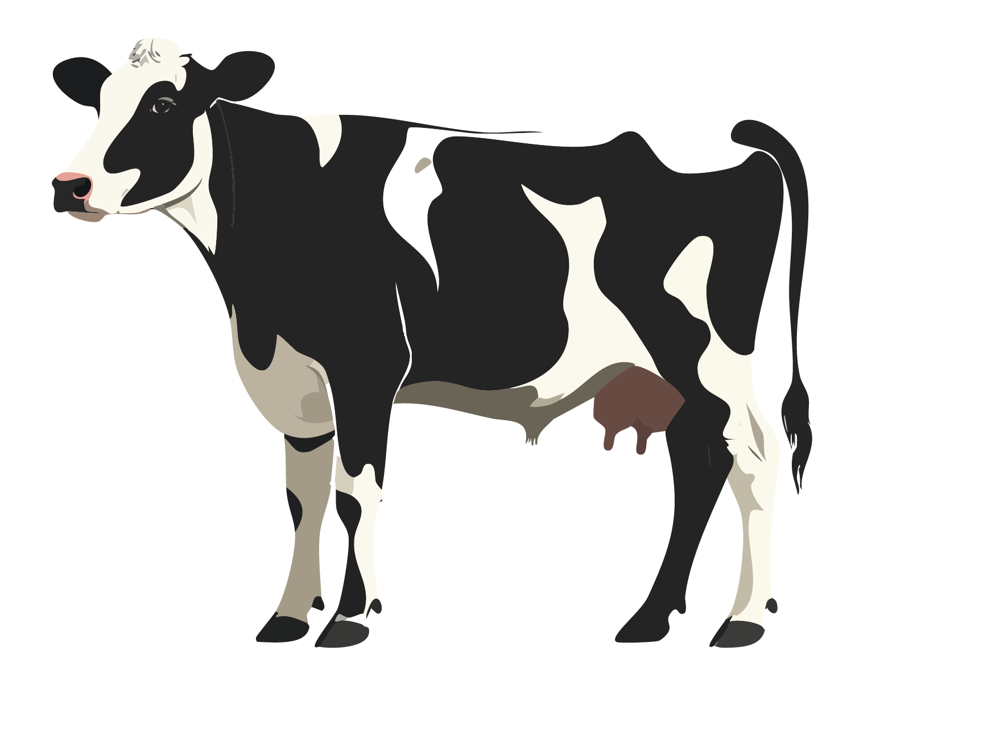

탄소의 발생 이유와 줄이는 방법
1. 교통수단
원인: 연료 연소와 에너지 소비. 대부분의 교통수단은 화석 연료(휘발유, 경유 등)를 연소해 동력을 얻기 때문에 직접적으로 온실가스(주로 CO₂)를 배출
- 자동차·오토바이·버스: 도로 화석연료(휘발유, 경유) 연소 → CO₂ 배출
- 항공기: 이착륙/순항 전 과정에서 고농도 배출, 고고도 비응축성 영향 포함
- 선박: 중유 사용, 항만 대기오염 및 온실가스 배출
- 전기차: 주행 중 직접배출은 없음. 다만 전력 생산 단계의 간접배출 존재
- 요약: 연료를 태우는 과정에서 직접적으로 CO₂가 배출(직접배출), 전기 사용 시엔 전력 생산 과정의 간접배출이 주요 원인
| 소비 패턴 |
주요 탄소 배출 원인 |
세부 내용 |
| 자가용 이용(특히 내연기관) |
화석 연료 연소 |
차량 연소 시 CO₂ 직접 배출. 차량 제조·정비 과정의 간접배출도 고려. |
| 비효율적 이동 |
1인당 운송 효율 저하 |
낮은 탑승률(혼자 이동)·우회 이동 등으로 단위 이동당 배출량 증가. |
| 차량 및 연료 생산 |
전 과정의 에너지 소비 |
차량 제조·정비·폐기 및 연료 생산/유통 과정의 간접배출. |
2. 식품(식습관)
원인: 생산·가공·운송 전 과정에서 배출. 농업 생산(특히 반추동물 사육의 메탄 CH₄)과 제조/포장, 냉장 유통, 조리 및 폐기 등에서 배출이 발생
- 육류(특히 소·양): 장내발효로 메탄(CH₄) 배출 + 사료/축사 운영 에너지 사용 → 높은 배출 강도
- 식물성 중심 식사: 곡물·콩류 중심은 상대적으로 배출 낮음
- 음식물 쓰레기: 매립 시 메탄(CH₄) 발생, 수거·처리 과정의 에너지 소모
- 가공/포장: 플라스틱·캔·종이 포장 제조 및 냉장/냉동 유통의 에너지 사용
- 요약: 생산~폐기까지 전 주기에서 CO₂·CH₄ 등 온실가스 배출
| 소비 패턴 |
주요 탄소 배출 원인 |
세부 내용 |
| 육류 중심의 식습관 |
축산업의 메탄(CH₄) |
반추동물 사육 시 메탄 배출 + 사료·축사 운영 에너지. |
| 푸드 마일리지 |
장거리 운송 |
수입 농산물/가공식품의 운송·저장 과정 배출. |
| 음식물 쓰레기 |
폐기/처리 과정 |
매립 시 메탄(CH₄) 발생, 수거·처리의 간접배출. |
| 가공 및 포장 |
제조 및 에너지 사용 |
식품 가공/포장(캔·플라스틱 등) 제조와 냉장/냉동 유통의 에너지. |

소 1마리는 연간 약 2.3톤 ~ 3톤 CO(2) 배출
3. 일회용품 사용
원인: 생산·사용·폐기 전 과정. 플라스틱은 주로 화석연료 기반 원료로 제조되며, 생산부터 폐기까지 많은 에너지를 사용
- 플라스틱 물품 생산: 원료 추출·정제·중합 공정의 에너지 소비 → CO₂ 배출
- 종이 제품 생산: 벌목·펄프·제지 공정 및 운송 에너지
- 폐기물 처리: 매립/소각 과정에서 메탄(CH₄)/CO₂ 배출, 재활용 과정 에너지 사용
- 요약: 생산→사용→폐기의 전 주기에서 배출 발생
| 소비 패턴 |
주요 탄소 배출 원인 |
세부 내용 |
| 플라스틱 물품 사용 |
화석연료 원료·가공 |
원료 추출·정제·제조 공정 에너지 사용과 공정 배출. |
| 종이 제품 사용 |
산림 자원·제조 에너지 |
벌목·펄프화·제지·운송 등 전 과정에서 배출 발생. |
| 폐기물 처리(매립/소각) |
메탄(CH₄)/CO₂ 배출 |
매립 시 메탄 발생, 소각 시 CO₂ 발생. 재활용 공정의 에너지 사용. |
4. 줄이는 방법(핵심 전략)
- 건물·산업 에너지 효율화 — 건물 단열 강화, 고효율 설비, 스마트 그리드/스마트 팩토리 도입
- 녹색도시·스마트 시티 기반 — 대중교통 확충, 탄소 중립형(도심) 보행/자전거 인프라, 도시 숲·공원 확충
- 탄소 상쇄 활동 — 나무심기·산림보호, 캠페인 참여, 친환경 기업/ESG 투자
- 친환경 교통·소비 습관 — 대중교통/자전거·도보 이용, 육류 소비 줄이기, 다회용기 사용/재사용·재활용, 에너지 절약